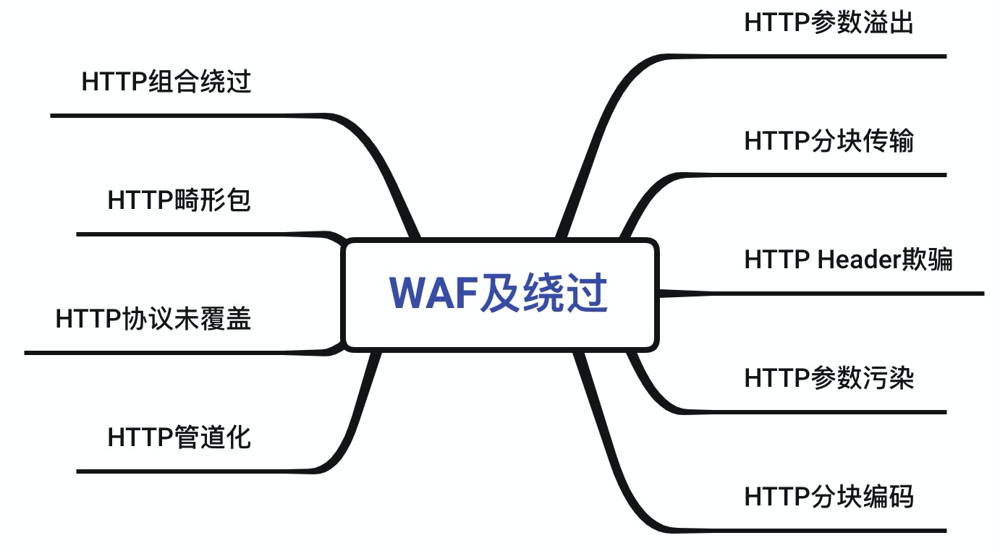
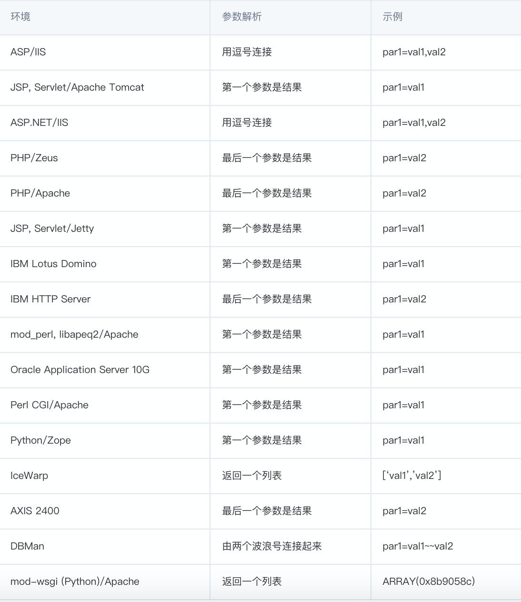
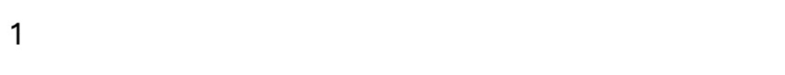
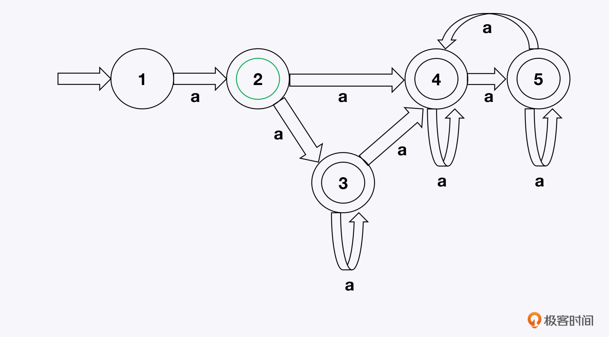
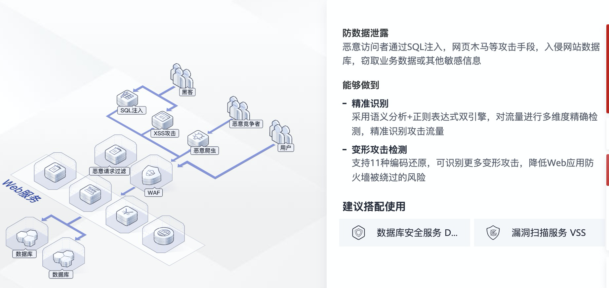
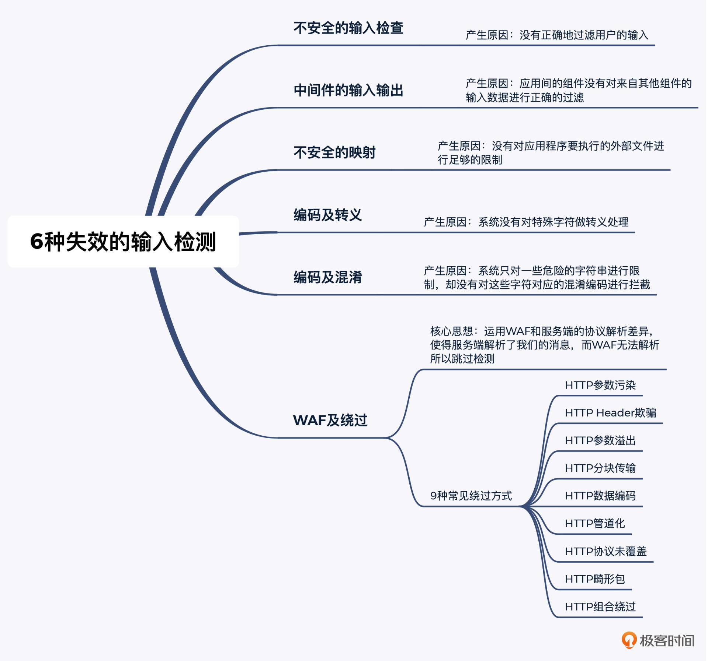

- 00 导读 解读OWASP Top10 2021.md.html
- 00 开篇词 从黑客的视角找漏洞，从安全的角度优雅coding.md.html
- 01 失效的访问控制：攻击者如何获取其他用户信息？.md.html
- 02 路径穿越：你的Web应用系统成了攻击者的资源管理器？.md.html
- 03 敏感数据泄露：攻击者如何获取用户账户？.md.html
- 04 权限不合理：攻击者进来就是root权限？.md.html
- 05 CSRF：为什么用户的操作他自己不承认？.md.html
- 06 加密失败：使用了加密算法也会被破解吗？.md.html
- 07 弱编码：程序之间的沟通语言安全吗？.md.html
- 08 数字证书：攻击者可以伪造证书吗？.md.html
- 09 密码算法问题：数学知识如何提高代码可靠性？.md.html
- 10 弱随机数生成器：攻击者如何预测随机数？.md.html
- 11 忘记加“盐”：加密结果强度不够吗？.md.html
- 12 注入（上）：SQL注入起手式.md.html
- 13 注入（下）：SQL注入技战法及相关安全实践.md.html
- 14 自动化注入神器（一）：sqlmap的设计思路解析.md.html
- 15 自动化注入神器（二）：sqlmap的设计架构解析.md.html
- 16 自动化注入神器（三）：sqlmap的核心实现拆解.md.html
- 17 自动化注入神器（四）：sqlmap的核心功能解析.md.html
- 19 失效的输入检测（上）：攻击者有哪些绕过方案？.md.html
- 20 失效的输入检测（下）：攻击者有哪些绕过方案？.md.html
- 21 XSS（上）：前端攻防的主战场.md.html
- 22 XSS（中）：跨站脚本攻击的危害性.md.html
- 23 XSS（下）：检测与防御方案解析.md.html
- 24 资源注入：攻击方式为什么会升级？.md.html
- 25 业务逻辑漏洞：好的开始是成功的一半.md.html
- 26 包含敏感信息的报错：将安全开发标准应用到项目中.md.html
- 27 用户账户安全：账户安全体系设计方案与实践.md.html
- 28 安全配置错误：安全问题不只是代码安全.md.html
- 29 Session与Cookie：账户体系的安全设计原理.md.html
- 30 HTTP Header安全标志：协议级别的安全支持.md.html
- 31 易受攻击和过时的组件：DevSecOps与依赖项安全检查.md.html
- 32 软件和数据完整性故障：SolarWinds事件的幕后⿊⼿.md.html
- 33 SSRF：穿越边界防护的利刃.md.html
- 34 Crawler VS Fuzzing：DAST与机器学习.md.html
- 35 自动化攻防：低代码驱动的渗透工具积累.md.html
- 36 智能攻防：构建个性化攻防平台.md.html
- 大咖助场 数字证书，困境与未来.md.html
- 春节策划（一） 视频课内容精选：Web渗透测试工具教学.md.html
- 春节策划（三） 一套测试题，看看对课程内容的掌握情况.md.html
- 春节策划（二） 给你推荐4本Web安全图书.md.html
- 结束语 无畏前行.md.html
- 捐赠
20 失效的输入检测（下）：攻击者有哪些绕过方案？
你好，我是王昊天。今天我们继续来学习失效的输入检测相关的内容。
WAF这个词，相信你或多或少听说过，也可能会学习过绕WAF知识的分享。不过WAF及绕过，确实是失效的输入检测中，比较复杂的一种，所以我身边很多朋友和我反馈，还是不太明白WAF到底是什么意思，又如何去绕WAF。
今天我们就重点学习下这个问题吧。
WAF及绕过
WAF的全称是Web应用防火墙，是Web Application Firewall的缩写，是网站常用来保护Web应用安全的一种安全产品。
WAF的主要功能是，通过检测客户端的请求内容，拦截具有潜在危险性的请求，以有效防御一些常见的针对 Web 应用的攻击，比如SQL注入、XSS等。所以，现在的中、大型网站基本都部署了WAF产品。
对于一名渗透测试人员来说，如果没有掌握 WAF 的基本绕过方法，在渗透测试过程中就会举步维艰。下面我们一起看看怎么进行WAF绕过。
我整理了下WAF绕过的9种常见方式，如下图所示。掌握了这9种绕过方式，你基本也就能应对大部分WAF绕过问题了。

HTTP参数污染
我们先看HTTP参数污染。HTTP协议允许同名参数存在，如果WAF对同名参数的处理方式不当，就会造成参数污染。
假设提交的参数为id=1&id=2&id=3，WAF有可能会把id解析为1，而后端的解析结果可能是3。这时候，攻击者只需要把攻击内容放在第3个参数，就能绕过WAF的检测。
这种绕过方法非常经典，不过因为WAF的更新维护，这个方法现在已经基本行不通了。但我们还是可以从这个例子学习绕过的思路。
具体到各个服务器对参数的解释方法，我放在了一张图中。这张图你不需要特别记住每个参数，具体用到的时候再查阅即可。

接下来，我们开始学习另一个绕过WAF的方法：HTTP Header欺骗，看看它是怎么发生的。
HTTP Header欺骗
有时候WAF会根据内置的白名单策略放行特定来源的请求包，例如来源本地IP地址。如果我们利用burpsuite，来修改HTTP请求包头部中的请求地址为127.0.0.1，实现伪造地址为应用的本地地址，就可以实现绕过WAF。
下面，我们会学习和参数污染相类似的一个绕WAF的方法。
HTTP 参数溢出
出于对性能的考虑，对参数非常多的请求，一些WAF只会检测其中一部分（比如前100个）参数。这种情况下，攻击者可以制造大量的无关参数用来“占位”，把真正的恶意参数放在后面。
WAF检测完前面一部分参数后没有发现问题，就放行了这个请求。这时候，攻击者就成功绕过了WAF的检测，把恶意参数带入了后端。
同样是出于对性能的考虑，一些WAF对于超长的数据包也会跳过。对于攻击者来说，他们可以构造超长的数据包，来绕过WAF的检测。
我们看个具体的例子。
我们对某网站先请求一个POST的XSS Payload，被拦截。
curl -v -d 'a=<img src=x onerror=alert(/xss/)>' xxx.com
之后通过Fuzz发现，当增加参数个数达到一定的量，例如100个之后，带着XSS Payload就不会被拦截了，并且网站可以正常访问。
curl -v -d 'a1=1&a2=2&......&a100=<img src=x onerror=alert(/xss/)>' xxx.com
在这个示例中，攻击者可以通过增加参数个数实现绕过WAF。理解了HTTP参数溢出问题之后，我们进入到对HTTP分块传输绕WAF的学习中。
HTTP 分块传输
分块传输是一种传输编码，是把报文分割成若干个大小已知的“块”进行传输。
我们可以利用burpsuite，将请求报文中的Transfer-Encoding字段指定为chunked值，来声明采用分块传输。这样就可以把一个完整的攻击数据分割成若干份，WAF由于无法匹配到完整的攻击特征值，因此就可能会被绕过。
几乎所有可以识别Transfer-Encoding数据包的WAF，都没有处理分块数据包中长度标识处的注释。这就意味着，如果在分块数据包中加入注释的话，WAF识别不出这个数据包。
我们看个具体的例子。
<?php
header("Content-Type: text/html;charset=utf-8");
$id = $_REQUEST["id"];
if ($id){
echo $id;
}
?>
这段代码是我们测试用的网页代码，我们先用GET方式上传参数，将id设置为：
1 and 1=1
获取到的响应如下：
根据响应我们可以发现这个payload被WAF拦截，这时候，我们利用分块传输来进行绕过：
POST /xxxxxx.php HTTP/1.1
......
Transfer-Encoding: Chunked
1;
i
d
=1
5
a
6
nd
2
1=1
0
获取到的响应为：

可以看到页面输出1，这个payload已经不再被拦截了。
好了，我们继续学习对HTTP数据编码绕WAF的方式。
HTTP 数据编码
我们可以利用burpsuite实现修改报文头Content-Type，从而指定一个特殊编码，例如ibm037、ibm500、cp875和ibm1026等不常见的编码，就可能使服务器可以正常解析但WAF无法解析请求包内容，继而实现绕过WAF的检测。
我们看一个具体的示例，来加深理解。
#这是未经特殊编码的原始请求
POST /sample.aspx?id1=something HTTP/1.1
HOST: victim.com
Content-Type: application/x-www-form-urlencoded; charset=utf-8
Content-Length: 41
id2=‘union all select * from users—
#经过ibm037编码，我们可以将它转化为下面的请求，从而绕过WAF
POST /sample.aspx?%89%84%F1=%A2%96%94%85%A3%88%89%95%87 HTTP/1.1
HOST: victim.com
Content-Type: application/x-www-form-urlencoded; charset=ibm037
Content-Length: 115
%89%84%F2=%7D%A4%95%89%96%95%40%81%93%93%40%A2%85%93%85%83%A3%40%5C%40%86%99%96%94%40%A4%A2%85%99%A2%60%60
在这个示例中，我们指定了编码方式为ibm037，由于WAF无法解析成功，导致拦截失败。这就是WAF通过HTTP数据编码来实现绕过WAF的方式。
HTTP 协议未覆盖
HTTP协议覆盖问题引发的WAF绕过方式，其发生原因是：我们可以修改参数提交方式导致WAF使用错误的方式检测请求内容，从而绕过WAF的检测。
我们先回顾下4种常见的Content-Type类型：text/html、application/json、application/x-www-form-urlencoded以及multipart/form-data。利用协议未覆盖来绕过，其实就是尝试替换Content-Type来绕过WAF过滤机制。
有的WAF未覆盖协议form-data，或是检测到form-data以后只当作文件上传来检测。但是，form-data不仅能支持文件上传，还能支持传键值对，所以在x-www-form-urlencoded下被拦截的数据包，能通过将Content-Type改为form-data的方法绕过一部分的WAF。
HTTP 畸形包
我们继续看看HTTP畸形包问题。
当前的 HTTP 服务，依据的是RFC2616标准（通常有以下8种方法：OPTIONS、GET、HEAD、POST、PUT、DELETE、TRACE、CONNECT）的HTTP请求。
但是，当向Web服务器发送畸形请求（非标准的 HTTP 数据包）时， Web 服务器出于兼容性考虑，会尽力解析这些畸形的数据包，而WAF处理这种畸形包时就可能不拦截。其实，在HTTP管道化的绕过中，我们也用到了它来绕过。
HTTP 管道化
通过HTTP管道化的方式绕过WAF的原理是：HTTP管道化，允许多个HTTP请求通过一个套接字同时被输出，而不用等待相应的响应。请求者会等待各自的响应，这些响应是按照之前的请求顺序依次到达。因为多个请求可被同时传送，如果WAF只检测第一个请求而忽略了后面的请求，就可以被绕过。
利用这个方法绕过WAF的步骤是：
- 先把HTTP协议的
Connection字段设置为keep-alive - 之后把
Content-Length设置为想要的值，来隐藏后面的威胁信息- 例如，原HTTP数据包为a=1，我们将Content-Length设置为3，然后用畸形包a=1GET XXX HTTP/1.1，（到此不换行），再换行跟上Host和Connection等信息，使得GET XXX HTTP/1.1达到绕过WAF检查的效果。
以上就是8种常见的WAF及绕过了。这8种方式，不一定要独立使用，还可以进行灵活组合，形成HTTP组合绕过方式，实现WAF的绕过。而且这样成功绕过的概率也会提高。
HTTP 组合绕过
其实，组合绕过的核心思想，就是运用WAF和服务端的协议解析差异，使得服务端能够解析我们的消息，而WAF无法解析所以跳过检测。
以上就是WAF及绕过的9种常见方式了，至此，我们也就把失效的输入检测的6种方式学完了。
掌握了失效的输入检测原理及产生原因后，我们再通过两个实战案例夯实下这部分基础。
两个案例带你深入理解失效的输入检测
案例一：因为正则表达式算法触发失效的输入检测的示例
正则表达式可以方便我们做字符串搜索及匹配，但是错误的使用方式也会导致易受外部攻击。我要展开的这个案例，就是一种拒绝服务攻击，它利用了正则表达式的一种特性：正则表达式本身会进行较为复杂的判断，如果触发极端情况就会让程序运行变得很慢。攻击者可以故意让程序使用正则表达式，来触发这种极端情况，并且让程序等待很久。
我们先来看下这种极端情况是如何产生的。
这种极端情况，来源于有问题的正则算法。这样的算法构建了一个非确定性的有限自动状态机（NFA），既然它是一个有限状态机，那对于每对状态和输入符号，可能都有多个下一个状态。然后引擎开始进行转换，直到输入结束。
由于存在多种可能的下一个状态，导致算法一一尝试所有可能的路径，直到找到匹配项，或者尝试所有路径但都失败。我们看一个例子。
正则表达式 ^(a+)+$ 可以由以下NFA表示：

当输入为aaaaX时，在上图中就有16种可能的路径，例如1->2->3->3->3。这就是其中之一，由于该路径匹配结果为aaaaa与aaaaX不一致，所以匹配失败。然后，继续匹配下一条路径，因为该输入无法匹配成功，所以最终需要遍历到所有的可能路径。对应到该输入，需要匹配所有的16条路径。
对于输入为aaaaX来说，这个输入遍历的路径还不是很多，但是当输入为aaaaaaaaaaaaaaaaX时，一共有65536条可能的路径，需要遍历的路径就变得非常多了。
这个问题，是由一个叫做回溯的正则表达式引擎功能引发的。当输入不匹配时，引擎会返回到之前的位置，在那里重新采取不同的路径，直到探索完所有可能的路径为止。
在我看来，这是因为正则表达式算法不成熟导致的。实际上正则表达式算法可以改得更高效，来避免这种问题的发生，但不幸的是出于某些原因，大多数正则表达式都会使用更简单的算法。
接下来，我们看一个攻击案例，引起正则表达式遍历问题的代码如下：
if (preg_match("/(a+)+b$/",$pass)) {
/* store first result set */
echo "match success";
}
else {
echo "match failure";
}
靶场已经集成在谜团上的“极客时间-漏洞挖掘与智能攻防实战”里。
我们打开题目ReDoS，运行靶机。当我们的输入如下内容：
aaaaaaaaaaaaaaaaaaaaaaaaaaaaaaaaaaaaaaaaaaaaaaaaaaabbaaaaaaaaaaaaaaaaaaaaaaaaaaaaaab
系统会出现卡顿，过了一段时间后会出现匹配失败，回溯次数已用尽的提示信息。这是因为，PHP内置了正则匹配的回溯上限次数，当回溯次数超出该限制时，就会返回匹配失败。
这样的限制可以在输入检测失效的情况下，减轻ReDos对PHP应用的影响。
接下来，我们一起看一个绕WAF的实例。
案例二：一个绕WAF的实例
这个WAF，是最新版本的安全狗V4.0网页（APACHE）版。我们可以在谜团上打开靶场安全狗4.0。之后访问该网页的目录inject.php，它的代码如下：
*<?php*
$id = $_GET['id'];
$con = mysql_connect(“localhost”,”root”,”root”);
*if* (!$con){*die*(‘Could not connect: ‘ . mysql_error());}
mysql_select_db(“dvwa”, $con);
$query = “SELECT first_name,last_name FROM users WHERE user_id = ‘$id’; “;
$result = mysql_query($query)*or* *die*(‘<pre>’.mysql_error().’</pre>’);
*while*($row = mysql_fetch_array($result))
{
*echo* $row[‘0’] . “ ” . $row[‘1’];
*echo* “<br />”;
}
*echo* “<br/>”;
*echo* $query;
mysql_close($con);
*?>*
我们尝试使用payload为：
?id=1' and 1=2 union select database(),2 --+
会发现被安全狗拦截了，但我们对它进行修改为：
?id=1'//*!14400and*//1=2//*//*//union//*!88888cas*//*/%0a*a*//select//**//*//*//database(//*%%!AJEST%%%%*//),2//**/--+/
注意，其中/*! ….*/是MySQL为了保持兼容，它把一些特有的仅在MySQL上用的语句放在了/*!….*/中，目的是这些语句在其他数据库中是不会被执行，但在MySQL中会被执行。
利用这个组合，我们就能绕过WAF，成功获取到当前的数据库的名称。
既然有这么多WAF绕过方式，那么在安全实践中，WAF厂商是如何防范自己的WAF被绕过的呢？
安全实践：如何防范自己的WAF被绕过？
Web服务器在对外提供各种应用服务时，经常会遇到这样的情况：请求的payload经过混淆或者编码，想要绕过Web安全防火墙。如果在HTTP请求中添加编码，很可能会绕过WAF规则，导致数据泄露风险。那本应该被拦截的请求，还是得到了对应的响应数据。
通常云WAF厂商都会自研解码引擎。针对不同使用场景，比如互联网、金融、政企，提供不同的解码组合方案。
我们以具有代表性的华为云WAF为例，看看他们的解码说明。

可以看到，华为云WAF可以做到将11种编码还原，使得通过这些编码/混淆绕过WAF的方法变得无效。
我们再看一个例子，基于nginx+lua实现针对http payload编解码操作，来加深理解。
#uri转码
local function _uri_decode(value)
local value = tostring(value)
return ngx.unescape_uri(value)
end
local function _uri_encode(value)
local value = tostring(value)
return ngx.escape_uri(value)
end
这是对URI解码以及编码的操作。在接收到payload后，进行URI解码可以帮助WAF系统，判断出借助URI编码尝试绕过的攻击行为，从而使得该WAF的防御效果更好。
好了，到这里，我们对几种失效的输入检测，以及其中的巨大危害，都了解得比较清楚了。那么，除了云厂商自己的WAF绕过安全实践外，还应该如何检测这些漏洞呢？
应对失效的输入检测的方式
对于输入验证问题，我们可以用多种方法来检测它。常见的方法有4种，包括静态分析、模糊测试、源代码分析、架构及设计审查。
一般来讲，这4种方式虽然都致力于解决失效的输入检测问题，但是它们各自擅长的领域是不同的，比如即使经过源代码分析，模糊测试依然能够发现新的问题；而单纯通过模糊测试，也很有可能无法覆盖到源代码分析这种白盒测试的结果。因此，这4种方式组合使用的效果更好。
接下来，我们一一学习下这4种方式。
静态分析
使用自动静态分析，可以检测到一些不正确的输入验证情况。
有的静态分析工具，允许用户指定应用的类型，针对用户选择的应用类型运行特定的检测方法。
有的静态分析工具，还会内置比较知名的验证框架的信息，例如Struts框架。如果这个工具分析判断出某个输入验证调用了已知的框架，那就可以降低该框架有效验证的探测的优先级。进而允许设计者专注于软件中输入验证的盲点位置。
模糊测试
除了静态分析之外，模糊测试技术也可以用来检测输入验证是否存在错误。当我们向一个软件提供意外的输入时，软件可能会变得“崩溃”、不稳定，并且可能会生成应用程序控制的错误消息。
如果出现这些异常或者解释器生成了错误信息，那就表明应用程序对输入的检查和处理并未达到应用程序内在的逻辑需求。
源代码分析
我们还可以使用源代码弱点分析器对源代码进行自动分析，当然我们也可以不利用工具，亲自进行手动分析。
架构及设计审查
除了静态分析、模糊测试和源代码分析方法外，我们还可以在架构及设计审查时检查输入验证的正确性。具体方法是：根据标准对系统进行检查（IEEE 1028 标准）（可应用于需求、设计、源代码等）、形式化方法/正确构造、攻击建模等方法。
总结
到这里，我们就把失效的输入检测相关的内容学习完了。
在第19和第20讲这两节课里，我和你分享了6种失效的输入检测，并展开了其中比较复杂的WAF及绕过。我把这些知识点，给你放到了一张脑图中，你可以保存下来，随时查看。

对于WAF绕过，我们今天学习的也只是9种常见的方式。但不论是哪种方式，绕过的核心思想，都是运用WAF和服务端的协议解析差异，使得服务端解析了我们的消息，而WAF无法解析所以跳过检测。
思考
在这一节课，我们学习了很多WAF绕过方式，但是WAF绕过与反绕过一直是在对抗升级的，只学习这些技巧还远远不够，那么从攻击者视角来看，WAF绕过的本质是什么呢？利用的本质问题又是什么呢？
欢迎在评论区留下你的思考。如果你觉得今天的内容对你有所帮助的话，欢迎你把课程分享给其他同事或朋友，我们共同学习进步！
© 2019 - 2023 Liangliang Lee. Powered by gin and hexo-theme-book.